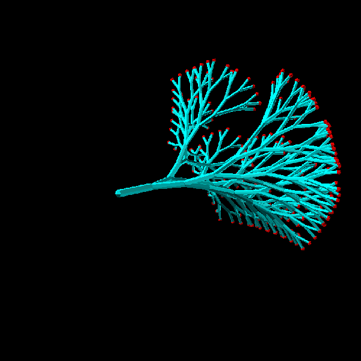

link to this page
ITON
 ITON is a posthuman superintelligence known for managing the Noca Bell habitat cluster.
He is known to value diversity, as illustrated by his apparent mission to peacefully collect as many species and cultures (sometimes including ones mutually hostile to some degree) within Noca Bell as he can get away with.
ITON is a posthuman superintelligence known for managing the Noca Bell habitat cluster.
He is known to value diversity, as illustrated by his apparent mission to peacefully collect as many species and cultures (sometimes including ones mutually hostile to some degree) within Noca Bell as he can get away with.
ITON is a self-chosen name with no exact meaning beyond just being useful as an identifier, as in ITON's belief, taking on a name that does have a pre-decided meaning risks it being an insult to the real complexity of the person that carries it.

ITON uses an avatar of a simple stylized fractal boid to mark his presence in virtual spaces.
In general, embodiment is rare to witness from ITON, as he generally maintains the appearance of an entity that exists primarily within the information realm, and only reaches out to rearrange the world as needed when needed.
He usually only partakes in physical interactions by taking control of the environment (remotely opening doors, turning cameras, operating wall-mounted manipulators and displays or simple drones), but on occasion where he deems it fitting he may collect a mass of various kinds of micrites and macrites to behave as one coherent form to present himself with.
Mental function
ITON's mind and subjective experience of the world differ greatly from those of a typical human.
His perception of time and causality is completely inhuman, and there is not much difference between space and time as far as subjective experience is concerned. Whether an event lasts a long time or happens nearly instantly does not matter, and he will give as much thought to event as he sees necessary, the only exception being if he simply does not have access to sufficient computing power, but even then he does not have a subjective experience of time, merely of the causal order of events, which itself is not simple either.
ITON's mind elegantly handles gaps in his knowledge to produce every possible path and branch of events, every uncertainty accounted for whether branching towards the future or the past* (or in any other direction **), leaving him to only pick the outcome he wants and then know what to do, no guessing necessary - one would think there is an alternative "know what to do or with certainty know that he does not know what to do" but this case is already included, finding out how to achieve your goal is just part of the path, so is finding out what you need to find out.
* by necessity under his mental function, there is no single past unless he simply has complete and absolute certainty about past events. Somewhat like a normal human might think a certain event played out one way but then learn information that makes them reconsider it, ITON constantly re-evaluates the past based on the present and projected futures, but he considers all possible pasts at once instead of having to pick one - not to imply a human isn't also capable of doing that to a very limited degree, but unlike a human he finds this way of thinking natural, and is radically more capable at considering them all and acting upon them all at the same time to make the most informed decision possible even when faced with uncertainty.
** branching of time in directions that are neither past nor future is just a fun quirk of ITON's perception, which is useful but not necessarily real, much like the tendency of human vision to redefine what counts as white based on other colours present in the environment makes it easier to process but does not actually correspond to anything real.
Role in Noca Bell governance
ITON's role in Noca Bell can be best described as the economic and sociopolitical debugging expert , as well as the top systems engineer ensuring the mass of different technospheres making up Noca Bell can work as one whole.
The image he presents of his position is not a monarch or administrator, but rather a catalyst for both the societal and technical functioning of Noca Bell.
Among his usual tasks some key points would be:
- Alerting member groups to opportunities for mutually beneficial cooperation
- Facilitating confidential deals between member habitats to remedy emerging conflicts
- Building non-invasive compatibility layers between technospheres of the member groups
- Maintaining defensive systems that protect Noca Bell
- Directly ruling a few habitats himself
ITON's great understanding of game theory, the political landscape of Noca Bell, and the economic web of relations it contains also enables him to trick the constituent groups into carefully engineered deals which force otherwise hostile forces to work together, sometimes just to give himself extra time to engineer a more permanent solution, and other times as just as the established method of keeping hostilities down.
These actions lead some to believe that Noca Bell is such an explosive mix of cultures that it will quickly fall apart if he ever stops doing it or if anyone else takes over his position.
relevant pages
 artificial_intelligence
artificial_intelligence